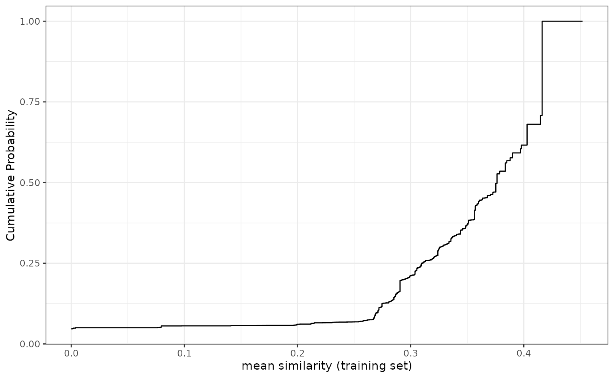

Similarity statistics can be used to compare data sets where all of the predictors are binary. One of the most common measures is the Jaccard index.
For a training set of size n, there are n similarity statistics for each new sample. These can be summarized via the mean statistic or a quantile. In general, we want similarity to be low within the training set (i.e., a diverse training set) and high for new samples to be predicted.
To analyze the Jaccard metric, applicable provides the following methods:
apd_similarity: analyzes samples in terms of similarity scores. For a training set of n samples, a new sample is compared to each, resulting in n similarity scores. These can be summarized into the median similarity.
autoplot: shows the cumulative probability versus the unique similarity values in the training set.
score: scores new samples using similarity methods. In particular, it calculates the similarity scores and if add_percentile = TRUE, it also estimates the percentile of the similarity scores.
The example data is from two QSAR data sets where binary fingerprints are used as predictors.
data(qsar_binary)Let us construct the model:
jacc_sim <- apd_similarity(binary_tr)
jacc_sim
#> Applicability domain via similarity
#> Reference data were 67 variables collected on 4330 data points.
#> New data summarized using the mean.As we can see below, this is a fairly diverse training set:
library(ggplot2)
# Plot the empirical cumulative distribution function for the training set
autoplot(jacc_sim)
We can compare the similarity between new samples and the training set:
# Summarize across all training set similarities
mean_sim <- score(jacc_sim, new_data = binary_unk)
mean_sim
#> # A tibble: 5 × 2
#> similarity similarity_pctl
#> <dbl> <dbl>
#> 1 0.376 49.8
#> 2 0.284 13.5
#> 3 0.218 6.46
#> 4 0.452 100
#> 5 0.0971 5.59Samples 3 and 5 are definitely extrapolations based on these predictors. In other words, the new samples are not similar to the training set and so predictions on them may not be very reliable.